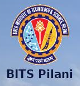

Summary:
- Course:B.E. (Hons.), Electrical and Electronics Engineering, 2025
- Email:f20211130@goa.bits-pilani.ac.in
- CGPA:6.99
Skills:
- ML
- Scikit-learn
- Cadence-Virtuoso
- DSA
- verilog
- X86 Assembly
- C/C++ STL
- DOS commands
- Python
- MS office
Certificates:
Projects:
- Heart Disease Predictor - Logistic Regression
A project designed using scikit-learn and basic supervised machine learning concepts like logistic regression.
- Employability Readiness Tool - Management
The project was to build a tool to gauge employability readiness in graduates in various sectors of employment.
- Image Scanner - x86 Interfacing
Project part of Microprocessors and Interfacing course.
- HYDRA AUV - Robotics and Electronics
An ongoing project as part of a technical club at my university to design a fully functional AUV for research and
competitions.
- SNAKE.IO - game development
A project designed using basic python code and basic gaming libraries of python.
Conferences and Workshops:
Learning algorithms
-
Product Management
-
DSA